HTML Inspector
Drag a block on any page, get URL: / Path: / HTML: on the clipboard. Two files to embed, or one Chrome extension.
▶ Try it live in the sandbox — a customer-like page that loads the two embed lines and lets you pick a block for real.
What it is
A mobile-friendly inspection FAB for any web page. Drag the button onto a block-level element and lift your finger: the page URL, the element path and its outerHTML land on the clipboard, ready to paste into a ticket, a chat or an AI assistant.
It is deliberately tiny: a zero-dependency browser script plus a stylesheet. There is no dashboard, no build step, no account. The same bundle is served as a static registry (GitHub Pages) and ships as two zips on GitHub Releases: an embeddable bundle and a Chrome MV3 shell that injects it into any tab on demand.
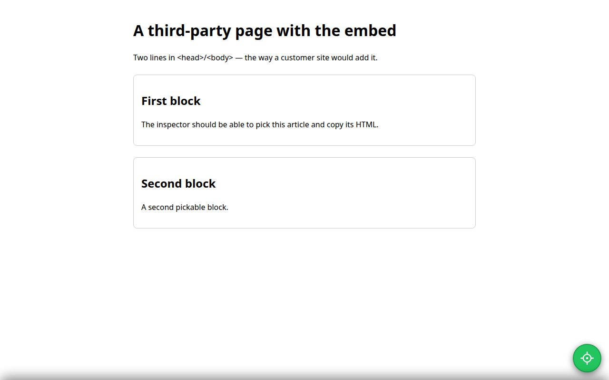
Who it is for
Employee QA on real sites. Testers and support engineers stop re-typing "the third card on the payments page" — they hand over the exact block, path and markup.
Agencies and freelancers. Hand a client a website that can explain itself; two tags in the page and every stakeholder can pick the block that looks wrong.
Support and docs teams. Paste a picked block into a ticket, a knowledge-base draft or a bug report — the payload is the same on every host, so the receiving side can replay it.
Anyone briefing an AI. Picked blocks carry a stable XPath/selector and a Markdown translation, so "fix this" arrives with the exact context instead of a screenshot.
Embed it on any page
Two lines, served from the published registry. The floating channel (v1/) follows the latest release, so a bundle update needs no page deploy.
<link rel="stylesheet" href="https://311ecode.github.io/html-inspector/registry/inspector/v1/inspector.css">
<script defer src="https://311ecode.github.io/html-inspector/registry/inspector/v1/inspector.js"></script>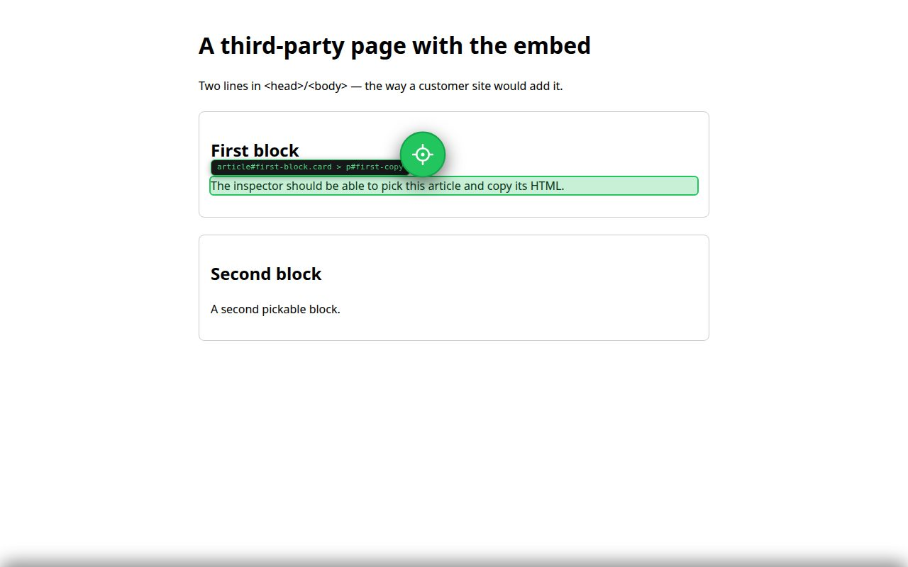
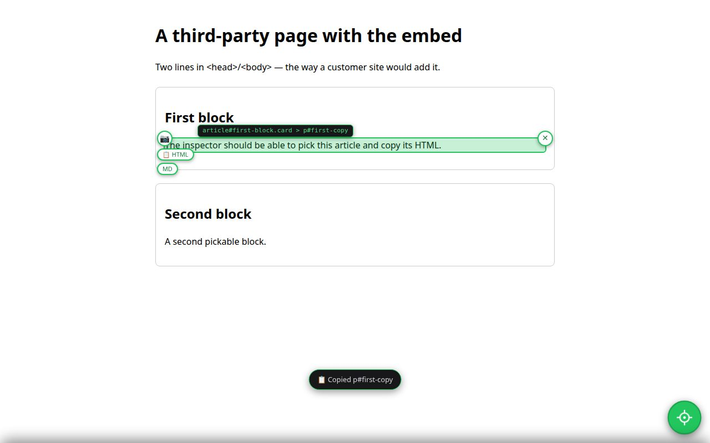
URL: http://127.0.0.1:46581/embed
Path: article#first-block.card > p#first-copy
HTML:
<p id="first-copy">The inspector should be able to pick this article and copy its HTML.</p>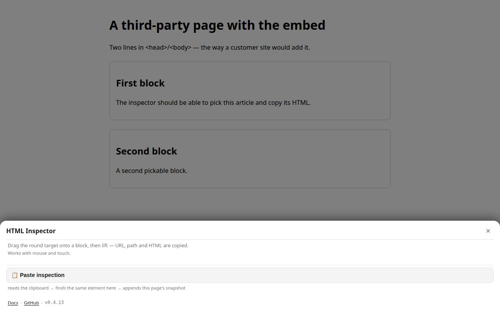
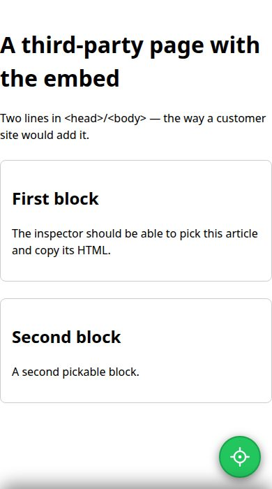
Add your own metadata to the clipboard
The plain payload is URL: / Path: / HTML:. A host page can enrich it, and the FAB does the rest — no configuration, no options. There are two levels, both JSON islands in the page, both optional:
Page-level context — one island per page, read by id. Every payload from that page then carries a Context: block, facts in island order:
<script type="application/json" id="evidence-context">
{"schema":"evidence-context/v1","facts":{"app":"Example Shop","suite":"orders-e2e"}}
</script>Per-block evidence
Put data-evidence-node="<id>" on the block (or an ancestor) and evidence-meta-<beat> islands anywhere in the page. The island entry for that id becomes Captured: (its captured / page route) plus an Evidence: block of the remaining facts:
<article data-evidence-node="order-card-42"> … </article>
<script type="application/json" id="evidence-meta-orders-1">
{"order-card-42":{"captured":"https://example-shop.test/orders/42",
"run":"39120487731 · orders-e2e", "dom":{"path":"html/orders/42.html"}}}
</script>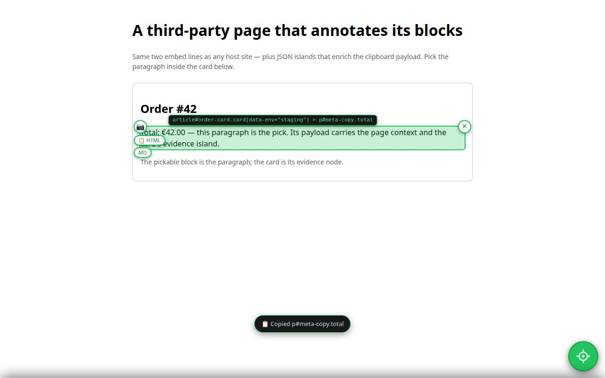
URL: http://127.0.0.1:46581/embed-metadata
Path: article#order-card.card[data-env="staging"] > p#meta-copy.total
Context:
app: Example Shop
suite: orders-e2e
environment: staging
commit: https://github.com/example-org/example-shop/commit/4f2c9a1
Captured: https://example-shop.test/orders/42
Evidence:
run: 39120487731 · orders-e2e · sha 4f2c9a1
dom: html/orders/42.html
imageSize: 1280×800 px
render: 1280×800 CSS @2×
HTML:
<p id="meta-copy" data-testid="order-total" class="total">Total: €42.00 — this paragraph is
the pick. Its payload carries the page context and the card's evidence island.</p>Rendering and degradation rules
Section order is frozen: context first, then Captured:, then Evidence:, then HTML: — a page with no islands keeps the byte-identical three-line payload.
Values are display text, not raw JSON: primitives are printed as-is; dom → path (plus (missing)), imageSize → 1280×800 px, render → 1280×800 CSS @2×, arrays join with , , any other object is compact single-line JSON. Strings longer than 300 characters are truncated with …, so one runaway value cannot make the paste unreadable.
Nothing here can break the copy: a malformed island, a missing entry for the id or an empty entry degrades to the plain payload — never an exception. The frozen format is covered by inspector/test/protocol.test.js, and the embed above is re-proved on every npm run test:e2e. The breadcrumb Path: carries the element's identity: its id, up to two real classes, and the dashboard's data-env / data-host attributes — so naming your blocks well makes the path alone useful on the receiving dashboard.
Developer tools are opt-in
The default sheet is the distribution one: a drag hint, Paste inspection and the snapshots you have collected. The Inspect and Append switches are a *site owner's* decision, not a visitor's, so they only exist when the page asks for them:
- ?dev=1 in the URL (internal pages, deep links), or - data-html-inspector-dev="1" on the <html> element or on the embedding <script> tag.
Nothing reloads the page, nothing rewrites the URL, and there is no switch a visitor could flip — the capability stays in the bundle, the public sheet never shows it.
<script defer src="…/registry/inspector/v1/inspector.js"
data-html-inspector-dev="1"></script>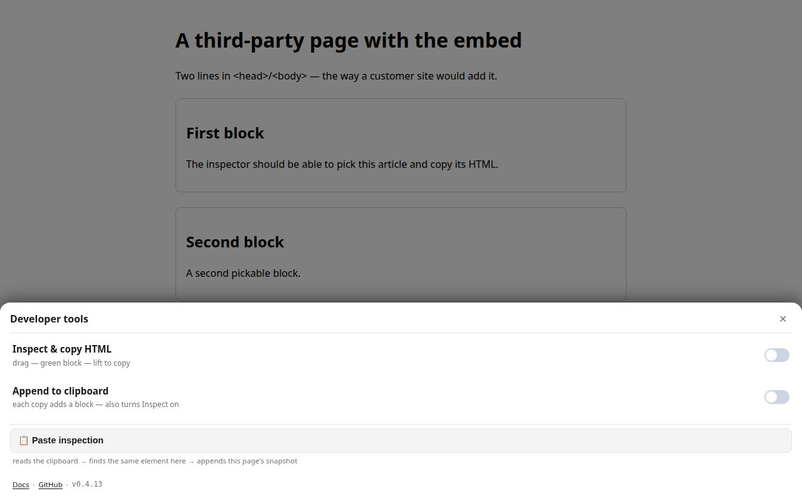
Or use the Chrome extension
The extension is a thin trigger: nothing runs until you press Alt+Shift+I. It probes the page, injects the same vendored bundle and stylesheet, and either adds its FAB (a page with no inspector) or donates the screen-capture bridge to a page that already has one.
1. Download html-inspector-extension-<version>.zip from the latest release
2. chrome://extensions -> Developer mode -> Load unpacked -> the unzipped folder
3. Press Alt+Shift+I on any page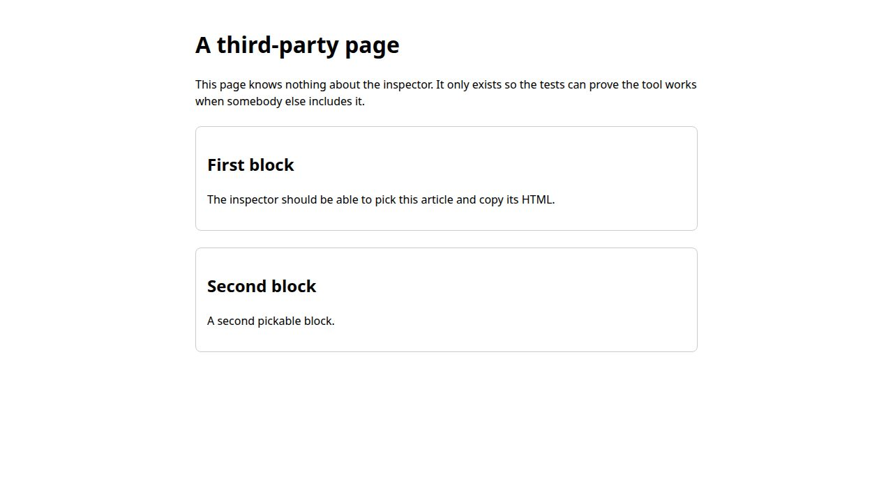
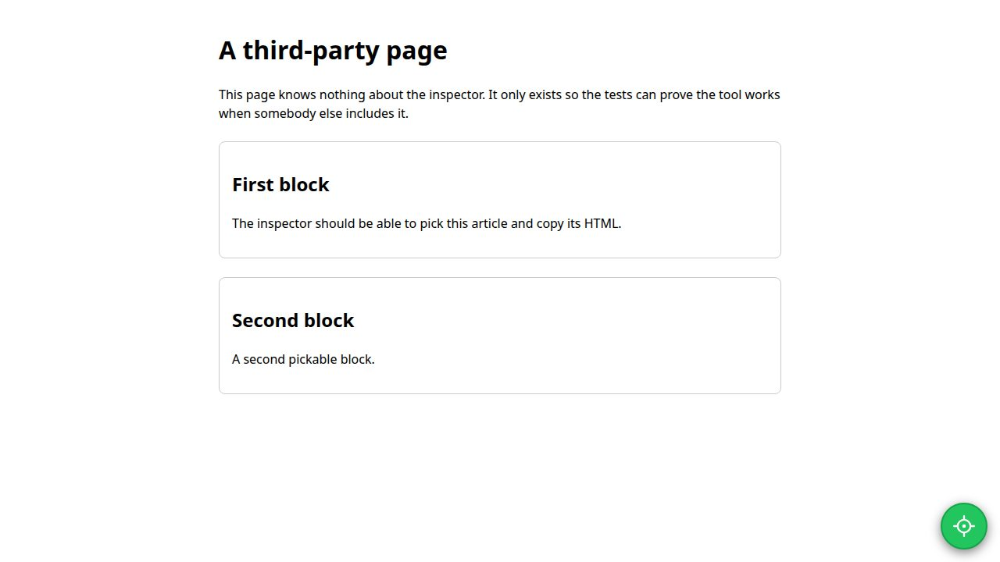
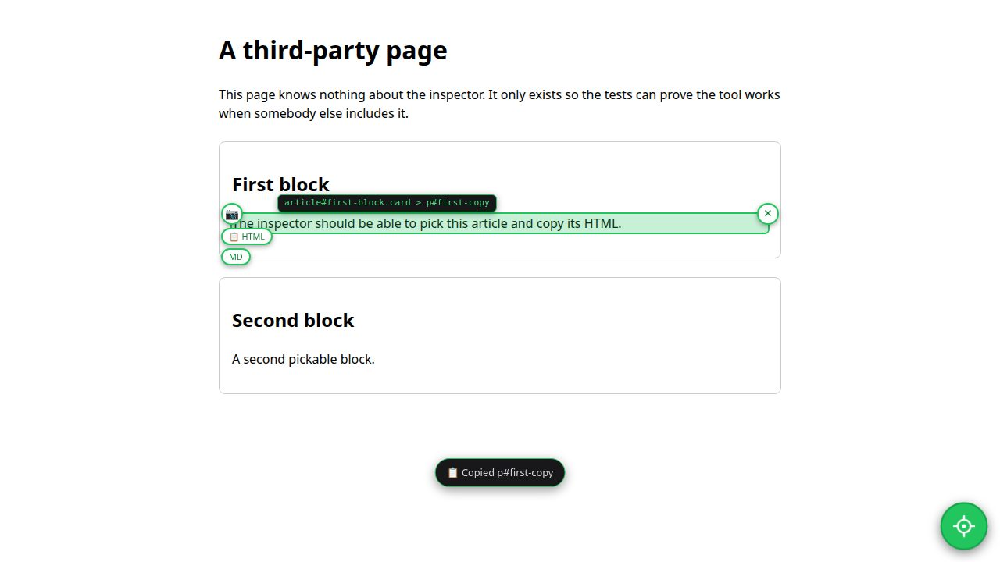
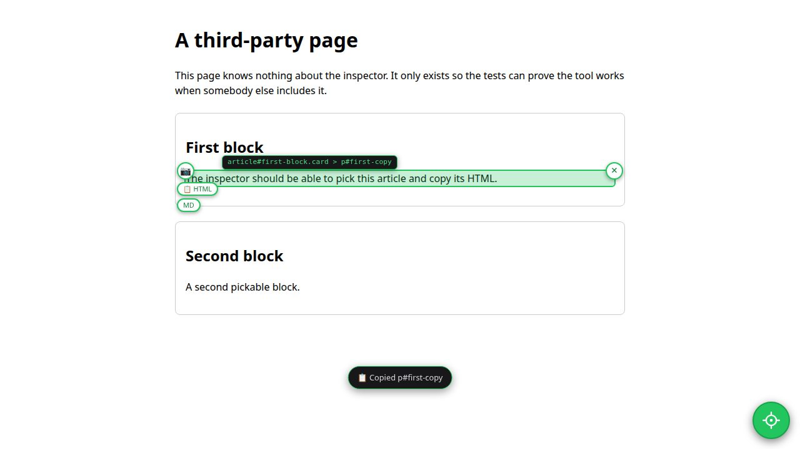
URL: http://127.0.0.1:46581/
Path: article#first-block.card > p#first-copy
HTML:
<p id="first-copy">The inspector should be able to pick this article and copy its HTML.</p>Verify what you ship
Every zip ships with a .sha256 sibling, and the static registry is hash-pinned by registry/index.json — the same verification the repo runs in CI. The current version and its links are below.
curl -sL https://311ecode.github.io/html-inspector/registry/index.json
# latest, channel paths and per-file sha256 for every published version